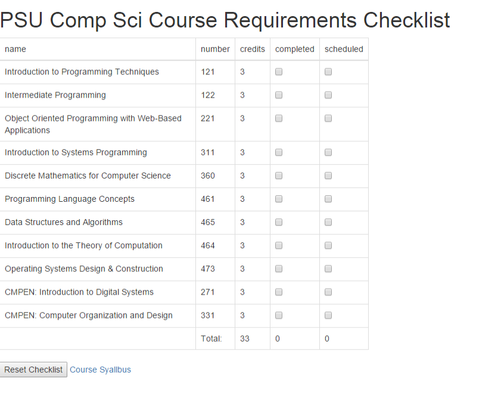

Toggle navigation
Home
Blog
Berty Ruan
Student, Fullstack Developer & Data Scientist
Hi! I'm Berty Ruan. I currently study computer science and statistics at Penn State University. I like to dabble in web development, but my studies are driven by my fasination in data's power to drive decision making abilities.
Web Dev

Data Science